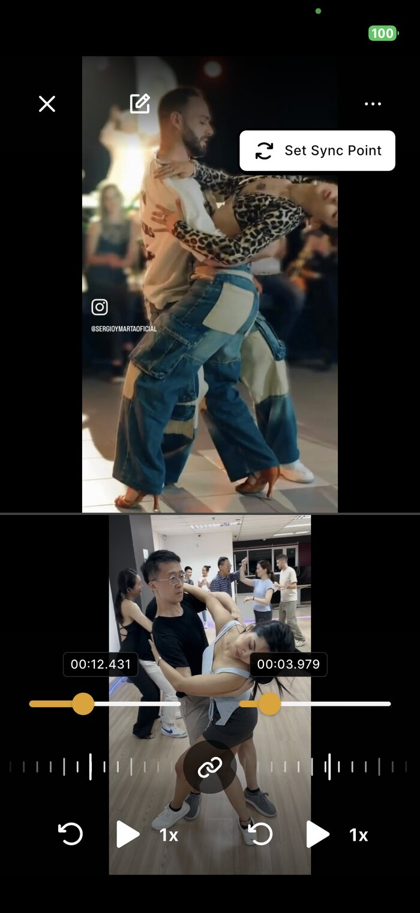
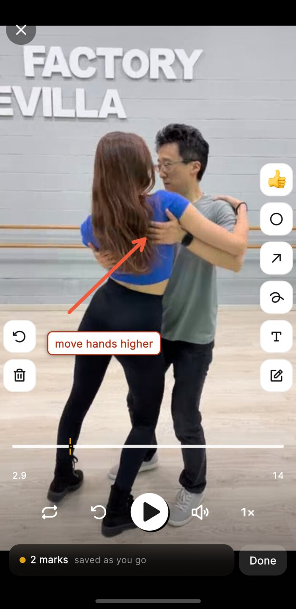

How it works
1
Start with a clip
From Instagram or your camera roll - share a clip straight into the app.
2
Drop it into a goal
Just a few moves and a deadline. That's what turns a saved clip into something you'll practice.
3
Loop it, then film it
Loop the four 8-counts that trip you up. Then film yourself against it.
4
Spot the difference
Play both at once, frame for frame - you'll see exactly what's off.

5
Pin the fix
Circle it, emoji it, or write a note - pinned to the exact timestamp.

6
Track your progress
Learning ○ → Polishing ◐ → Got it ●.
+
Want another pair of eyes?
Send it to a teacher or friend - their notes pin to the exact frame.